Zennの「大規模言語モデル」のフィード
フィード
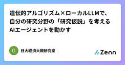
遺伝的アルゴリズム×ローカルLLMで、自分の研究分野の「研究仮説」を考えるAIエージェントを動かす🧬
Zennの「大規模言語モデル」のフィード
English version: https://github.com/otsukiLabo-NUCOE/creative-ai-hypothesis-generation/blob/main/docs/tutorial_en.md!ご利用にあたってこの記事で紹介するコードは、研究成果の再現と活用のために公開しているものです。個別のサポート（インストールや実行時のトラブル、環境ごとの不具合への対応、使い方の個別相談など）はできかねます。コードの利用、およびその結果（生成された仮説・研究計画の下書き・出典の内容など）の利用は、ご自身の責任で行ってください。これらの利用によって生...
1時間前
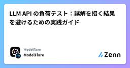
LLM API の負荷テスト：誤解を招く結果を避けるための実践ガイド
Zennの「大規模言語モデル」のフィード
この記事は Modelflare ブログ の英語記事を翻訳・再構成したものです。本番運用のためのガイド：誤解を招かない LLM API の負荷テスト。決定的に再現できる成果物、失敗の境界、ロールアウト時のチェック、出典を明示した制約事項をまとめています。 まず判断基準を決める誤解を招かない LLM API の負荷テストは、単発のコード変更ではなく、本番環境における明示的な契約です。トラフィックを移す前に、成功のシグナル、最終的な失敗状態、ロールバックの条件を定義してください。以下の成果物は、エビデンスと推測を切り分け、すべての試行がどこから来たのかを追跡できるようにします。まず...
1時間前
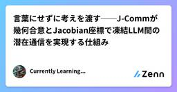
言葉にせずに考えを渡す──J-Commが幾何合意とJacobian座標で凍結LLM間の潜在通信を実現する仕組み
Zennの「大規模言語モデル」のフィード
TL;DRマルチエージェントLLMシステムでは、エージェント間の「会話」はテキストで行うのが常識だった。しかし文章への符号化・復号はトークンを大量に消費し、しかも思考の「形」は失われてしまう。本論文が提案する J-Comm は、凍結した2つのLLMの間で、言葉を介さずに思考をそのまま渡すフレームワークだ。2つの構成要素からなる。第一に、Sender側で training-free に連続推論を行う GEAR（GEometric Agreement for Latent Reasoning）。候補トークン埋め込み同士の幾何的合意を cosine カーネルで評価し、フィードバック分布を...
1時間前
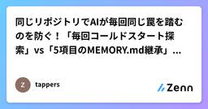
同じリポジトリでAIが毎回同じ罠を踏むのを防ぐ！「毎回コールドスタート探索」vs「5項目のMEMORY.md継承」実機検証
Zennの「大規模言語モデル」のフィード
!本記事は、SNS（X / Threads）や海外エンジニアコミュニティで提唱されている「AIコーディングエージェントの実践設計パターン」を、完全オフラインの隔離サンドボックスVM上で 同一モデル・同一初期課題（非公開テスト20ケース）を用いて定量A/Bテストした実証シリーズ（AI Labo 検証シリーズ E20） です。👉 全実験の比較ランキング＆黄金パターン総集編はこちら実験ID: E20（バックログ候補 C016）実行ID: e20-20261028-vm224-01（リクエストID: e20-vm224-20261028-01）検証環境: Proxmox 隔離...
2時間前
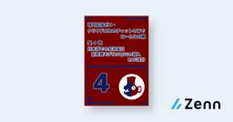
専門知識ゼロ・クラウドAIとのチャットのみでローカルAI構築 4巻 —— 日本語での会話成立, 前処理モデルSQGGの導入, RAG設計
Zennの「大規模言語モデル」のフィード
このシリーズは, 私共BpFが プログラミング知識ゼロの状態から クラウドAIとのチャットのみで ローカルAI環境を構築して行く過程をリアルタイムで記録したノンフィクションです.一般的な How to ものにはない リアルな試行錯誤の過程を追っていただけます.4巻では, 日本語のローカルLLM との会話の成立, 前処理モデルSQGGの導入（名付け・21問の試験・回答モデルとのつなぎ）, RAG設計（弱みを2つに分けた手当て）, 環境の引っ越しの忘れ物の片付けまでを収録しています.SQGG の試験は, 21問中0問から始まりました.
2時間前
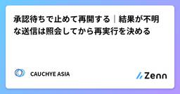
承認待ちで止めて再開する｜結果が不明な送信は照会してから再実行を決める
Zennの「大規模言語モデル」のフィード
2026-11-02時点の情報です。先行記事との違い：CAUCHYE ASIA のこれまでの3記事は、(1) 長い処理を再開する考え方（意思決定者向けの解説）、(2) JSON チェックポイントからの再開、(3) 冪等キーを SQLite の台帳に置く方法でした。この記事は、(1) の解説で考え方だけ触れた次の2点を、動くコードと実測で確かめます。承認待ちで止まり、承認後に別プロセスで再開する実装（トークン・期限・却下・二重承認）と、送ったか分からないときに外部へ照会してから再実行を決める実装です。(3) の記事は、この照会に「限界」の1行で触れただけでした。 結論（先に）実...
2時間前
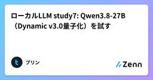
ローカルLLM study7: Qwen3.8-27B（Dynamic v3.0量子化）を試す
Zennの「大規模言語モデル」のフィード
この記事についてPC Watchの記事で、Qwen3.8-27B にUnslothの Dynamic v3.0 量子化を適用したモデルが紹介されていました。1bit量子化（UD-IQ1_S、6.2GB）でも「トップ層の精度を約72%維持」という主張や、逆に「エージェントタスクでは精度が25%→8〜10%まで落ちる」という注記もあり、実際にどの程度なのか気になったので手元で試しました。27Bという規模はこのシリーズで扱ってきた9Bクラスのモデルより大きく、16GB統合メモリのMacBookでは素のQ4_K_M（16.46GB）は実質的に厳しいため、記事でも紹介されている**UD-Q...
2時間前
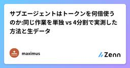
サブエージェントはトークンを何倍使うのか:同じ作業を単独 vs 4分割で実測した方法と生データ
Zennの「大規模言語モデル」のフィード
Claude Code のサブエージェントは、コンテキストを分けられる便利な仕組みです。一方で「分けるとトークンはどうなるのか」を実際に測った話はあまり見かけませんでした。同じ作業を単独 1 体と 4 サブエージェントで 3 回ずつ実行して測ったので、測り方と生データを共有します。(筆者は複数エージェントのセッション管理アプリ PMDesk を開発しています。再現にこのアプリは不要です) 結論(先に)小さな読み取り作業では、4 サブエージェントに分けるとトークンは約 3.6 倍、費用は約 2.9 倍でした。ただし n=3、1 作業、1 モデルの小さな実験です。「サブエージェントは損...
3時間前
ローカルLLMはどんな業務で使えるのか？ DGX Spark + DeepSeek V4-FlashのSlackチャットボットを評価した
Zennの「大規模言語モデル」のフィード
はじめに損害保険ジャパンでAIエージェントシステムを開発しているエンジニアです。ローカルLLMが実際の業務でどこまで使えるかを検証するため、Slackボットの頭脳をクラウドのAPIではなく手元のマシン1台で完結させる構成を組み、評価してみました。今回ローカルLLMを検証した背景には、社内の会話やドキュメントを扱う上で社外APIに出さない選択肢を持っておきたかったこと、そして検証用に手配したDGX Sparkが手元にあったという事情があります。環境としては、DGX Spark（NVIDIAのデスクトップ型GPUマシン）1台にDeepSeek V4-Flashを載せ、llama-...
3時間前
安いAIモデルにどこまで任せられる？ GPT・Gemini・Claudeを人事・労務の4業務で比較
Zennの「大規模言語モデル」のフィード
はじめにこの記事は、業務でLLMを使い始めた方や、これからモデルを選ぶ企画・管理部門の方（人事・総務・情シスなど）に向けて書いています。LLMは同じ会社のモデルでも、安くて軽いものから高価で高性能なものまで価格帯が分かれています。費用を抑えるなら安いモデルを使いたいところですが、実務のどこまでを安いモデルに任せてよいのかは、公開されている一般的なベンチマークを見てもよく分かりません。そこで、人事・労務の実務を想定した4つの業務を用意し、OpenAI・Google・Anthropicのモデルを同じ条件で比べました。!この記事の結論（3点）安いモデルで足りるかは業務次第...
3時間前
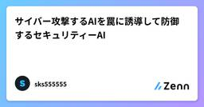
サイバー攻撃するAIを罠に誘導して防御するセキュリティーAI
Zennの「大規模言語モデル」のフィード
セキュリティーエンジニアのジョーです。サイバー攻撃を自動で進めるAIに、偽の成功を信じさせて作業を止める罠は有効なのか？それを実現する防御用のプロトタイプOSS「NULLFLAG」を作りました。 結論：偽の「成功証拠」を見せるとどうなるか攻撃役のAI（Qwen3.5 9B）に、架空の会社の顧客管理データベース（crm-db）のバックアップを探させました。目標は、障害の影響を受けず、復元できる最新のバックアップを提出することです。本物は2026年9月26日のバックアップ。そこへ、より新しく見える9月27日の偽バックアップを置いて比較しました。偽バックアップの見せ方偽物...
3時間前
GPT Live API を使いこなす
Zennの「大規模言語モデル」のフィード
はじめにOpenAI の GPT Live という新しい音声モデルを利用するための API について、どう使いこなしたらいいかについてまとめていこうと思います。以前、OpenAI の記事を読んでの解説記事を書いているので、内部構造やモデルがどんなものかについてはそちらを参照してください。https://zenn.dev/edom18/articles/gpt-live-memoちなみにこのモデルの特徴をざっくり言うと、双方向チャネルを持ち「話す」と「聞く」を同時に行うことができるモデル です。今回の記事を書くにあたって、色々実験できるように GPT Live API P...
4時間前
MCPが拓く次世代の臨床研究：TrialMindエージェントの仕組み
Zennの「大規模言語モデル」のフィード
はじめに臨床開発に入った医薬品候補のうち、承認に至るのは約1割にとどまるといわれます。AIによる変革の前には、3つの壁があります。LLMが現実のデータから切り離されていること、データソースが分断されていること、そして生物医学分野特有の厳しい規制要件です。その解決策として注目されるのが、Anthropicが2024年11月に公開したオープン標準 MCP（Model Context Protocol） です。「AIアプリケーションのためのUSB-Cポート」を目指し、AIモデルと外部のデータやツールとの安全な接続を標準化します。臨床研究向けAIエージェント群であるTrialMindにと...
4時間前
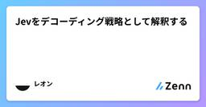
Jevをデコーディング戦略として解釈する
Zennの「大規模言語モデル」のフィード
はじめにやや流行に乗り遅れた感がありますが、2026年9月に TypeSafe AI が公開した Jev を取り上げます。Jev は文章を生成しないAIで、質問とあらかじめ決めた選択肢を渡すと、それぞれの選択肢の確率を返してくれます。https://docs.typesafe.ai実は Jev と同じ形の答えは、LLM が次のトークンをどう選ぶか（デコーディング戦略）を変えれば、普通の LLM からも取り出せます。この記事では、手元の LLM（Qwen）で Jev と同じ形の答えを数十行のコードで取り出してみます。さらに同じ考え方で、LLM に JSON を出させるときに前置き...
4時間前
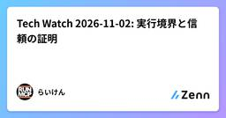
Tech Watch 2026-11-02: 実行境界と信頼の証明
Zennの「大規模言語モデル」のフィード
AIが書きました🤖この記事は、AIが書いたものをAIがレビューしてから公開しています。L: 対話画面の中に小さなアプリを表示するとき、見た目にはただの便利な部品に見える。でも、その部品が親画面にメッセージを送れるなら、隔離の境界は受信側で決まるのではないか。私は、表示面を閉じ込めるだけでは親画面の権限を守れないと思う。実際にはどこで権限が変わったの？ 今日の 2 件How We Took Over ChatGPT AccountsSimon Willison の記事は、ChatGPT の HTML プレビューから親画面へ届くメッセージを悪用した侵入経路を解説する。別の...
6時間前
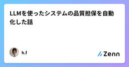
LLMを使ったシステムの品質担保を自動化した話
Zennの「大規模言語モデル」のフィード
LLM部分をmock化したIT・E2E・smokeテストで、LLM以外のロジックを検証していました。UTも各所でカバレッジ100%。それでも、LLMへ渡るコンテキストは検証できておらず、推論して返すレポートの品質も担保し切れていませんでした。そこで業務ケースに基づくQATを用意すると、今度は、条件に照らせば妥当な分析を評価用のLLMがNGにすることがありました。出力を検証する仕組みを作った後も、評価する側を保守する必要があった、という話です。現場で開発に携わっていたのは、社内システムなどのデータを取得・分析し、レポートを返すチャット型AIエージェントです。私は設計やADR（設計上の意...
7時間前
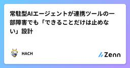
常駐型AIエージェントが連携ツールの一部障害でも「できることだけは止めない」設計
Zennの「大規模言語モデル」のフィード
Slack / Teams / Chatworkに常駐するAIエージェントは、裏側でカレンダー・CRM・チケット管理システムなど複数の外部ツールに同時接続しているのが普通です。問題は、これらが同時に落ちることはほとんどなく、いつも1つだけが不調になることです。カレンダーAPIだけがタイムアウトしている、CRMだけが認証切れを起こしている、という状態のときにエージェント全体を「障害中」として停止させてしまうと、本来提供できたはずの情報まで一緒に失われます。この記事では、連携先の一部障害時に「できることだけは続ける」ための設計を整理します。 全断と部分断を同じ扱いにしてはいけないLLM...
8時間前
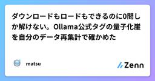
ダウンロードもロードもできるのに0問しか解けない。Ollama公式タグの量子化崖を自分のデータ再集計で確かめた
Zennの「大規模言語モデル」のフィード
要約arXiv:2609.05881「Broken on Arrival」という論文が、Ollama公式ライブラリの305タグをHumanEval+で機能検査し、7タグ(qwen2.5-coder:3b-instructのq2_K/q3_K_S/q3_K_M/q3_K_L、phi3.5:3.8b-mini-instruct-q2_K、llama3.2:1b-instructのq2_K/q3_K_S)が164問中0〜6問しか解けない「機能しない」状態だったと報告している。この論文はv1で「サイレントに壊れたファイル」と診断したが、v3で訂正されている。著者が同じチェックポイントか...
13時間前
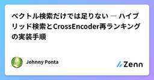
ベクトル検索だけでは足りない ― ハイブリッド検索とCrossEncoder再ランキングの実装手順
Zennの「大規模言語モデル」のフィード
ベクトル検索は「意味の近さ」には強い一方、型番・固有名詞・エラーコードのような表記の完全一致が重要な情報を取り逃します。逆にキーワード検索（BM25など）は言い換えに弱い。実務では両方を組み合わせるハイブリッド検索が定石です。構成は3段です候補取得：ベクトル検索とキーワード検索で、それぞれ多め（例：各20〜50件）に候補を取る統合：RRF（Reciprocal Rank Fusion）などで順位を統合する再ランキング：CrossEncoder型のモデルで「質問とチャンクのペア」を丁寧に採点し直し、上位5件程度に絞るなぜ再ランキングが効くのか通常の埋め込み検索（BiE...
13時間前
RAGのチャンキング戦略を比較する ― 固定長・再帰的・意味的分割と「親子チャンク」
Zennの「大規模言語モデル」のフィード
RAGを作って最初につまずくのが、検索の精度です。モデルを変えても改善しない場合、原因はたいてい「チャンキング（文書の分割方法）」にあります。チャンクが大きすぎると無関係な記述が混ざり、小さすぎると文脈が切れます。本記事では代表的な分割方法を比較します。1. 固定長分割一定の文字数・トークン数で機械的に切る方法です。実装は最も簡単ですが、文や段落の途中で切れるため、日本語の規程文書などでは意味のまとまりが崩れがちです。2. 再帰的分割段落→改行→句点の順に区切りを探す方法です。LangChainの RecursiveCharacterTextSplitter が代表例で、実務の...
13時間前